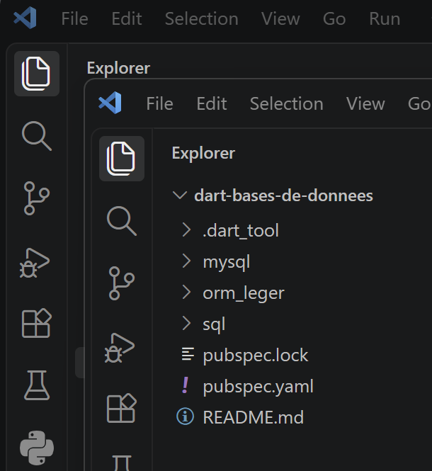
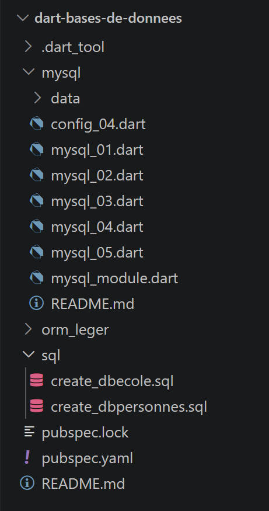
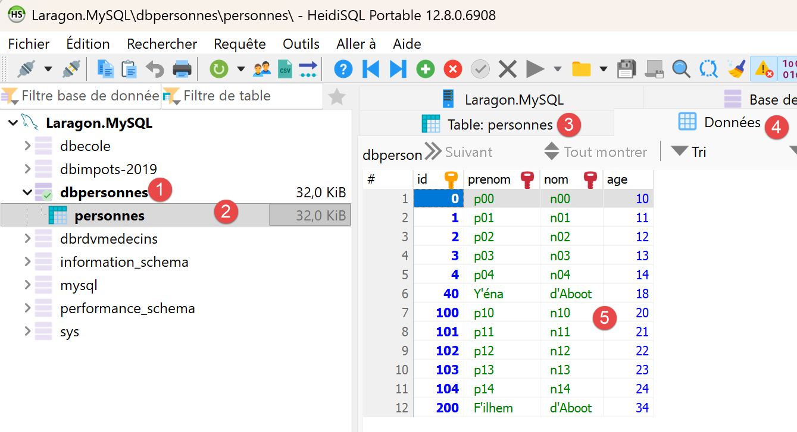
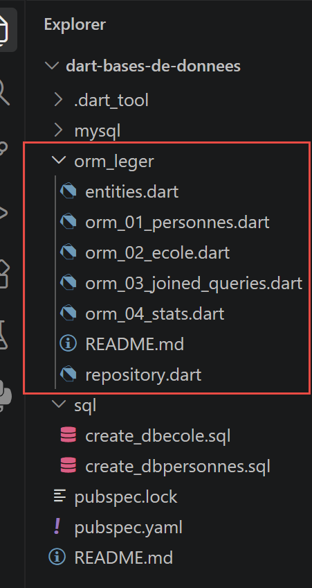

7. Accès aux bases de données

Le cours TypeScript consacre trois chapitres à l'accès à une base MySQL : le pilote natif [mysql2], puis deux ORM ([TypeORM] et [Prisma]), sur le même exemple - deux bases [dbpersonnes] (une seule table) et [dbecole] (quatre tables liées : classes, élèves, matières, notes). Ce chapitre porte le premier à l'identique, puis regroupe les deux chapitres ORM en un seul : Dart n'a pas d'équivalent mûr de [TypeORM] ou [Prisma] pour MySQL (voir l'encadré en fin de chapitre), et plutôt que de forcer une correspondance artificielle avec l'un ou l'autre, on construit un «ORM léger» qui montre ce qu'un ORM fait réellement, en l'écrivant soi-même.
7.1. Accès direct à la base de données

Le paquet TypeScript [mysql2] n'a pas d'équivalent maintenu par l'équipe MySQL elle-même côté Dart. Une première version de ce chapitre utilisait [package:mysql1] (pub.dev/packages/mysql1), un pilote MySQL pur Dart largement utilisé - mais qui s'est révélé incompatible avec MySQL 8.4 (la version livrée par Laragon) : même une requête aussi triviale que "select 1" échouait systématiquement avec l'erreur protocolaire "Got packets out of order", un bug connu et non résolu du paquet (issues GitHub adamlofts/mysql1_dart #112 et #161). On utilise donc désormais [package:mysql_client_plus] (pub.dev/packages/mysql_client_plus), un fork activement maintenu et testé avec MySQL 8.x, dont l'API - [MySQLConnection.createConnection], [connexion.connect], [connexion.execute], [connexion.close] - reste très proche de celle de [mysql2].
7.1.1. Préparer la base [dbpersonnes]
La base dbpersonnes ne comporte qu'une seule table, personnes, reprenant le même schéma que celui utilisé par le cours Python (colonnes id, prenom, nom, age, avec une contrainte d'unicité sur le couple (nom, prenom)). Le script sql/create_dbpersonnes.sql ci-dessous crée la base, l'utilisateur applicatif et la table, puis y insère cinq personnes arbitraires :
-- create_dbpersonnes.sql
-- Recrée la base [dbpersonnes] utilisée par le chapitre « Accès à MySQL avec le
-- pilote natif [mysql2] », avec des données arbitraires (les originales du cours
-- Python/Flask 2020 n'étant plus disponibles).
--
-- Utilisation :
-- mysql -u root -p < create_dbpersonnes.sql
--
-- Crée la base, l'utilisateur applicatif [admpersonnes/nobody] (mêmes
-- identifiants que le cours d'origine) et la table [personnes].
DROP DATABASE IF EXISTS dbpersonnes;
CREATE DATABASE dbpersonnes CHARACTER SET utf8mb4 COLLATE utf8mb4_unicode_ci;
CREATE USER IF NOT EXISTS 'admpersonnes'@'localhost' IDENTIFIED BY 'nobody';
GRANT ALL PRIVILEGES ON dbpersonnes.* TO 'admpersonnes'@'localhost';
FLUSH PRIVILEGES;
USE dbpersonnes;
CREATE TABLE personnes (
id INT PRIMARY KEY,
prenom VARCHAR(30) NOT NULL,
nom VARCHAR(30) NOT NULL,
age INTEGER NOT NULL,
UNIQUE (nom, prenom)
);
-- données arbitraires (mêmes personnes que les exemples du cours d'origine)
INSERT INTO personnes (id, prenom, nom, age) VALUES
(1, 'Paul', 'Langevin', 48),
(2, 'Sylvie', 'Lefur', 70),
(3, 'Pierre', 'Nicazou', 35),
(4, 'Geraldine','Colou', 26),
(5, 'Paulette', 'Girond', 56);
Pour créer cette base MySQL vous pouvez utiliser l’outil [HeidiSQL] de Laragon. Nous l’avons déjà utilisé.
- En [1], lancez tous les services de Laragon. Cela lancera le SGBD MySQL ;
- en [2], accédez à l’outil [HeidiSQL] de gestion de bases de données;
- En [1-2], ouvrez une session MySQL ;
Avec [1-2], exécutez successivement les deux fichiers SQL du projet :

Toujours dans [HeidiSQL], faites F5 pour rafraîchir l’affichage :
Nous sommes maintenant prêts à utiliser ces deux bases de données.
7.1.2. script [mysql_01]
| // mysql_01.dart
// Porte databases/mysql/mysql-01.ts.
//
// Première étape : se connecter à la base MySQL [dbpersonnes] puis se
// déconnecter.
//
// [choix technique] le paquet TypeScript [mysql2] n'a pas d'équivalent
// direct côté Dart maintenu par l'équipe MySQL elle-même. Une première
// version de ce chapitre utilisait [package:mysql1] (pub.dev/packages/
// mysql1), un pilote MySQL pur Dart largement utilisé - mais qui s'est
// révélé incompatible avec MySQL 8.4 (livré par Laragon) : même une requête
// aussi triviale que "select 1" échouait systématiquement avec l'erreur
// protocolaire "Got packets out of order" (bug connu, non résolu, du
// paquet). On utilise donc ici [package:mysql_client_plus]
// (pub.dev/packages/mysql_client_plus), un fork activement maintenu et
// testé avec MySQL 8.x, dont l'API - [MySQLConnection.createConnection],
// [connexion.connect], [connexion.execute], [connexion.close] - reste très
// proche de celle de [mysql2].
import 'package:mysql_client_plus/mysql_client_plus.dart';
// connexion à la base MySQL [dbpersonnes]
// l'identité de l'utilisateur est (admpersonnes, nobody)
const String user = 'admpersonnes';
const String pwd = 'nobody';
const String host = 'localhost';
const int port = 3306;
const String database = 'dbpersonnes';
Future<void> main() async {
// [différence avec TypeScript] pas de type union "MySqlConnection |
// undefined" ici : un champ nullable ([MySQLConnection?]) joue le même
// rôle - "pas encore connecté" est représenté par [null], exactement
// comme "pas encore connecté" était représenté par [undefined] côté TS.
MySQLConnection? connexion;
try {
print('Connexion au SGBD MySQL en cours...');
// [différence avec TypeScript] contrairement à mysql1 (et à mysql2),
// [mysql_client_plus] sépare la CRÉATION de l'objet connexion
// ([createConnection], qui ne fait encore aucun échange réseau) de
// l'établissement effectif de la connexion ([connect], qui négocie le
// protocole avec le serveur) - deux étapes bien distinctes, là où
// mysql1 les confondait dans un seul appel [MySqlConnection.connect].
// On n'affecte [connexion] (la variable nullable du bloc [finally])
// qu'une fois [connect] réussi : si [connect] échoue, [connexion]
// reste [null] et le [finally] ne tentera pas de fermer une connexion
// qui n'a jamais été réellement ouverte.
final nouvelleConnexion = await MySQLConnection.createConnection(
host: host,
port: port,
userName: user,
password: pwd,
databaseName: database,
);
await nouvelleConnexion.connect();
connexion = nouvelleConnexion;
// suivi
print(
"Connexion MySQL réussie à la base database=$database, host=$host sous l'identité user=$user, passwd=$pwd",
);
} catch (erreur) {
// on affiche l'erreur
print("L'erreur suivante s'est produite : $erreur");
} finally {
// on ferme la connexion si elle a été ouverte
if (connexion != null) {
await connexion.close();
}
}
}
|
Commentons ce code :
- ligne 19 : [import 'package:mysql_client_plus/mysql_client_plus.dart';] : le nouveau pilote MySQL pur Dart, en remplacement de [package:mysql1] - incompatible avec MySQL 8.4 (livré par Laragon) : même une requête aussi triviale que "select 1" échouait systématiquement avec l'erreur protocolaire "Got packets out of order", un bug connu et non résolu du paquet (cf. le commentaire en tête de fichier).
- ligne 34 : [MySQLConnection? connexion;] : un champ NULLABLE joue exactement le rôle du type union [MySqlConnection | undefined] de TypeScript - [null] représente «pas encore connecté», comme [undefined] côté TS.
- lignes 47-55 : [final nouvelleConnexion = await MySQLConnection.createConnection(...); await nouvelleConnexion.connect(); connexion = nouvelleConnexion;] : [mysql_client_plus] sépare la CRÉATION de l'objet connexion ([createConnection], qui ne fait encore aucun échange réseau) de l'établissement effectif de la connexion ([connect], qui négocie le protocole avec le serveur) - deux étapes bien distinctes, là où [mysql1] (comme [mysql2] côté TypeScript) les confondait dans un seul appel. [connexion] (la variable nullable du [finally]) n'est affectée qu'une fois [connect] réussi, pour que le [finally] ne referme jamais une connexion qui n'a jamais été réellement ouverte.
- [try] / [catch] / [finally] : structure identique à la version précédente - la connexion est toujours refermée dans le [finally], qu'il y ait eu erreur ou non.
Le résultat de l’exécution est le suivant :
| Connexion au SGBD MySQL en cours...
Connexion MySQL réussie à la base database=dbpersonnes, host=localhost sous l'identité user=admpersonnes, passwd=nobody
|
7.1.3. script [mysql_02]
| // mysql_02.dart
// Porte databases/mysql/mysql-02.ts.
//
// Dans ce nouveau script, la connexion à la base est isolée dans une
// fonction.
import 'package:mysql_client_plus/mysql_client_plus.dart';
// connecte puis déconnecte (login, pwd) de la base [database] du serveur
// [hote] ; lance une exception si problème
Future<void> connexion(String hote, int port, String database, String login, String pwd) async {
MySQLConnection? cnx;
try {
// connexion - [createConnection] crée l'objet, [connect] négocie
// réellement avec le serveur (cf commentaire de mysql_01.dart) ; on
// n'affecte [cnx] qu'après un [connect] réussi, pour que le [finally]
// ne referme jamais une connexion qui n'a pas abouti
final nouvelleConnexion = await MySQLConnection.createConnection(
host: hote,
port: port,
userName: login,
password: pwd,
databaseName: database,
);
await nouvelleConnexion.connect();
cnx = nouvelleConnexion;
print(
"Connexion réussie à la base database=$database, host=$hote sous l'identité user=$login, passwd=$pwd",
);
} finally {
// on ferme la connexion si elle a été ouverte
if (cnx != null) {
await cnx.close();
print('Déconnexion réussie\n');
}
}
}
// ---------------------------------------------- main
// identifiants de la connexion
const String user = 'admpersonnes';
const String passwd = 'nobody';
const String host = 'localhost';
const int port = 3306;
const String database = 'dbpersonnes';
Future<void> main() async {
// connexion d'un utilisateur existant
try {
await connexion(host, port, database, user, passwd);
} catch (erreur) {
// on affiche l'erreur
print('$erreur');
}
// connexion d'un utilisateur inexistant
try {
await connexion(host, port, database, 'xx', 'xx');
} catch (erreur) {
// on affiche l'erreur
print('$erreur');
}
}
|
Commentons ce code :
- lignes 10-36 : [Future<void> connexion(String hote, int port, String database, String login, String pwd) async { ... }] : la connexion est isolée dans une fonction réutilisable, qui lance une exception en cas d'échec plutôt que de l'intercepter elle-même - à l'appelant de décider quoi en faire. Elle reprend le motif création + [connect()] de [mysql_01.dart] : [cnx] n'est affecté qu'après un [connect] réussi.
- ligne 43 : [const int port = 3306;] : [mysql_client_plus] exige un port EXPLICITE ([createConnection]) là où [ConnectionSettings] de [mysql1] déduisait tout seul le port par défaut (3306).
- Le [main] appelle deux fois cette fonction, dans deux blocs [try]/[catch] séparés : une fois avec des identifiants valides, une fois avec des identifiants erronés, pour illustrer les deux chemins.
Le résultat de l’exécution est le suivant :
| Connexion réussie à la base database=dbpersonnes, host=localhost sous l'identité user=admpersonnes, passwd=nobody
Déconnexion réussie
MySQLServerException [1045]: Access denied for user 'xx'@'localhost' (using password: YES)
|
7.1.4. script [mysql_03]
| // mysql_03.dart
// Porte databases/mysql/mysql-03.ts.
//
// Maintenant qu'on sait se connecter, on émet des ordres SQL sur la
// connexion : on (re)crée la table [personnes] de la base [dbpersonnes].
import 'dart:io';
import 'package:mysql_client_plus/mysql_client_plus.dart';
// exécute une requête de mise à jour sur la connexion
Future<void> executeSql(MySQLConnection connexion, String requete) async {
await connexion.execute(requete);
}
// ---------------------------------------------- main
// identifiants de la connexion
const String id = 'admpersonnes';
const String pwd = 'nobody';
const String host = 'localhost';
const int port = 3306;
const String database = 'dbpersonnes';
Future<void> main() async {
// on y va étape par étape
late final MySQLConnection connexion;
try {
// connexion - [package:mysql_client_plus], comme mysql1 avant lui,
// exécute par défaut chaque requête dans sa propre transaction
// auto-validée (équivalent de AUTOCOMMIT=True côté Python)
connexion = await MySQLConnection.createConnection(
host: host,
port: port,
userName: id,
password: pwd,
databaseName: database,
);
await connexion.connect();
} catch (erreur) {
print("L'erreur suivante s'est produite : $erreur");
// [différence avec TypeScript] `process.exit(1)` devient `exit(1)`
// (dart:io) - même sémantique, même code de sortie de processus
exit(1);
}
// suppression de la table personnes si elle existe
// si elle n'existe pas une erreur se produira - on l'ignore
try {
await executeSql(connexion, 'drop table personnes');
} catch (_) {
// ignorée - le [_] indique qu'on se moque de la valeur de l'exception
}
// création de la table personnes
const requete = 'create table personnes (id int PRIMARY KEY, prenom varchar(30) NOT NULL, nom varchar(30) NOT NULL, '
'age integer NOT NULL, unique(nom,prenom))';
try {
await executeSql(connexion, requete);
print('$requete : requête réussie');
} catch (erreur) {
print("L'erreur suivante s'est produite : $erreur");
} finally {
await connexion.close();
}
}
|
Commentons ce code :
- lignes 10-12 : [Future<void> executeSql(MySQLConnection connexion, String requete) async { await connexion.execute(requete); }] : une fonction utilitaire pour exécuter un ordre SQL de mise à jour (ici, un DROP TABLE puis un CREATE TABLE) - [connexion.execute(...)] remplace [connexion.query(...)] de [mysql1] (même rôle, nouveau nom de méthode côté [mysql_client_plus]).
- ligne 41 : [exit(1);] (de [dart:io]) : l'équivalent de [process.exit(1)] - même sémantique, même code de sortie de processus, en cas d'échec de connexion.
- ligne 47 : [try { await executeSql(connexion, 'drop table personnes'); } catch (_) {}] : le [_] en paramètre du [catch] indique qu'on se moque de la valeur de l'exception - la table n'existe peut-être simplement pas encore.
Le résultat de l’exécution est le suivant :
| create table personnes (id int PRIMARY KEY, prenom varchar(30) NOT NULL, nom varchar(30) NOT NULL, age integer NOT NULL, unique(nom,prenom)) : requête réussie
|
7.1.5. script [config_04]
| // config_04.dart
// Porte databases/mysql/config-04.ts.
//
// Configuration du script [mysql_04] : chemin du fichier de commandes SQL
// et identifiants de connexion à la base [dbpersonnes].
//
// [différence avec TypeScript] config-04.ts retrouve le dossier du script
// avec `dirname(fileURLToPath(import.meta.url))`. Dart dispose d'un
// équivalent direct et plus court : [Platform.script] (dart:io) est déjà
// l'URI du script en cours d'exécution - il suffit d'y résoudre un chemin
// relatif avec [.resolve(...)], sans manipulation de chaînes. Nuance :
// [Platform.script] désigne le script PRINCIPAL lancé par `dart run`
// (mysql_04.dart), pas ce fichier-ci - contrairement à `import.meta.url`,
// propre à chaque fichier. Le résultat est ici identique puisque
// config_04.dart et mysql_04.dart vivent dans le même dossier.
import 'dart:io';
class Config {
final String commandsFilename;
final String host;
// [migration mysql_client_plus] contrairement à mysql1, dont
// [ConnectionSettings] déduisait le port par défaut (3306) tout seul,
// [MySQLConnection.createConnection] exige un port EXPLICITE - on
// l'ajoute donc ici à la configuration.
final int port;
final String database;
final String user;
final String password;
const Config({
required this.commandsFilename,
required this.host,
required this.port,
required this.database,
required this.user,
required this.password,
});
}
Config configure() {
return Config(
// fichier des commandes SQL, résolu relativement à CE fichier
commandsFilename: Platform.script.resolve('data/commandes.sql').toFilePath(),
// identifiants de la connexion à la base de données
host: 'localhost',
port: 3306,
database: 'dbpersonnes',
user: 'admpersonnes',
password: 'nobody',
);
}
|
Commentons ce code :
- ligne 43 : [Platform.script.resolve('data/commandes.sql').toFilePath()] (de [dart:io]) : l'équivalent direct et plus court de [dirname(fileURLToPath(import.meta.url))] côté TypeScript - [Platform.script] est déjà l'URI du script en cours d'exécution, il suffit d'y résoudre un chemin relatif.
- Nuance à connaître : [Platform.script] désigne le script PRINCIPAL lancé par [dart run] (ici [mysql_04.dart]), pas forcément le fichier où l'expression est écrite - contrairement à [import.meta.url], propre à chaque fichier. Le résultat reste correct ici puisque [config_04.dart] et [mysql_04.dart] vivent dans le même dossier.
- lignes 18-28 : [class Config { final String commandsFilename; ...; final int port; ...; const Config({required this... }); }] : une classe immuable pour regrouper la configuration, comme l'interface [Config] de la version TypeScript - avec un champ [port] supplémentaire, exigé explicitement par [MySQLConnection.createConnection] (là où [ConnectionSettings] de [mysql1] déduisait tout seul le port par défaut, 3306).
7.1.6. script [mysql_module]
| // mysql_module.dart
// Porte databases/mysql/mysql-module.ts : fonctions réutilisables pour
// exécuter une liste (ou un fichier) de commandes SQL sur une connexion
// MySQL ouverte.
//
// [migration] ce fichier utilisait initialement [package:mysql1], qui s'est
// révélé incompatible avec MySQL 8.4 (cf commentaire de pubspec.yaml). Il a
// été porté vers [package:mysql_client_plus] - voir plus bas la différence
// que cela change pour la gestion des transactions.
import 'dart:io';
import 'package:mysql_client_plus/mysql_client_plus.dart';
// affiche le résultat d'une commande SQL (résultat d'un execute() de
// mysql_client_plus)
// - si [resultats.cols] n'est pas vide, c'était un SELECT : on affiche les
// colonnes puis les lignes ;
// - sinon, c'était un ordre de mise à jour (INSERT/UPDATE/DELETE/DDL) : on
// affiche le nombre de lignes modifiées ([resultats.affectedRows],
// équivalent du [rowcount] d'un curseur).
void _afficherInfos(IResultSet resultats) {
if (resultats.cols.isNotEmpty) {
// c'était un SELECT - [cols] décrit les colonnes demandées
final titres = resultats.cols.map((c) => c.name).toList();
final entete = titres.join(', ');
print(entete);
print('*' * entete.length);
for (final ligne in resultats.rows) {
print(titres.map((t) => ligne.colByName(t)).toList());
}
print('*' * entete.length);
} else {
// pas de colonnes décrites - ordre de mise à jour
print('nombre de lignes modifiées : ${resultats.affectedRows}');
}
}
// utilise la connexion ouverte [connexion]
// exécute sur cette connexion les commandes SQL contenues dans la liste
// [commandesSql] (une commande par élément ; les lignes vides ou
// commençant par # sont ignorées)
// - si suivi=true, chaque exécution d'un ordre SQL fait l'objet d'un
// affichage indiquant sa réussite ou son échec ;
// - si arret=true, la fonction s'arrête sur la 1ère erreur rencontrée,
// sinon elle exécute toutes les commandes ;
// - si avecTransaction=true, toute erreur annule l'ensemble des ordres SQL
// exécutés auparavant (rollback) ; sinon chaque commande est validée
// indépendamment (comportement par défaut de MySQL, en AUTOCOMMIT) ;
// la fonction rend une liste [erreur1, erreur2, ...]
//
// [différence avec TypeScript] mysql2 expose directement
// `connexion.beginTransaction()/commit()/rollback()`. [package:mysql1]
// (utilisé dans une première version de ce fichier) n'exposait pas ces
// méthodes une par une : il fallait piloter la transaction "à la main", en
// envoyant nous-mêmes les ordres SQL [START TRANSACTION], [COMMIT] et
// [ROLLBACK]. [package:mysql_client_plus] apporte enfin l'équivalent direct
// de mysql2 : `connexion.transactional<T>((cnx) async { ... })` exécute le
// callback dans une transaction, valide (COMMIT) automatiquement s'il se
// termine normalement, et annule (ROLLBACK) automatiquement s'il lève une
// exception - plus aucun ordre SQL de contrôle de transaction à écrire
// nous-mêmes.
Future<List<String>> executeListOfCommands(
MySQLConnection connexion,
List<String> commandesSql, {
bool suivi = false,
bool arret = true,
bool avecTransaction = true,
}) async {
final erreurs = <String>[];
// exécute réellement les commandes sur la connexion [cnx] fournie : c'est
// soit [connexion] elle-même (pas de transaction), soit la connexion
// "de travail" que [transactional] fournit à son callback (avec
// transaction) - la boucle est écrite une seule fois pour les deux cas
Future<void> executerCommandes(MySQLConnection cnx) async {
for (final commandeBrute in commandesSql) {
// on élimine les blancs de début et de fin de la commande courante
final commande = commandeBrute.trim();
// commande vide ou commentaire ? on passe à la suivante
if (commande == '' || commande[0] == '#') {
continue;
}
// exécution de la commande courante
try {
final resultats = await cnx.execute(commande);
// pas d'erreur
if (suivi) {
print('[$commande] : Exécution réussie');
}
_afficherInfos(resultats);
} catch (erreur) {
final msg = '$commande : Erreur ($erreur)';
erreurs.add(msg);
if (suivi) {
print(msg);
}
// on s'arrête ?
if (avecTransaction || arret) {
// avec transaction : on relance l'erreur pour que
// [connexion.transactional] déclenche le ROLLBACK - avec
// [package:mysql_client_plus], c'est l'EXCEPTION qui pilote
// l'annulation, pas un simple arrêt de boucle comme avec le
// ROLLBACK manuel de la version mysql1
if (avecTransaction) rethrow;
return;
}
}
}
}
if (avecTransaction) {
try {
await connexion.transactional((cnx) => executerCommandes(cnx));
} catch (_) {
// l'erreur a déjà été consignée dans [erreurs] ci-dessus ; on
// l'avale ici pour renvoyer normalement la liste des erreurs à
// l'appelant, exactement comme le faisait la version mysql1 (qui ne
// laissait jamais fuir d'exception hors de cette fonction)
}
} else {
await executerCommandes(connexion);
}
return erreurs;
}
// utilise la connexion ouverte [connexion]
// exécute sur cette connexion les commandes SQL contenues dans le fichier
// texte [sqlFilename] (une commande par ligne)
Future<List<String>> executeFileOfCommands(
MySQLConnection connexion,
String sqlFilename, {
bool suivi = false,
bool arret = true,
bool avecTransaction = true,
}) async {
try {
final contenu = await File(sqlFilename).readAsString();
return await executeListOfCommands(
connexion,
contenu.split('\n'),
suivi: suivi,
arret: arret,
avecTransaction: avecTransaction,
);
} catch (erreur) {
return ["Le fichier $sqlFilename n'a pu être exploité : $erreur"];
}
}
|
Commentons ce code :
- ligne 20 : [void _afficherInfos(IResultSet resultats)] : distingue un SELECT ([resultats.cols] décrit les colonnes demandées) d'un ordre de mise à jour ([resultats.affectedRows], équivalent du [rowcount] d'un curseur) - [resultats.cols]/[resultats.rows] remplacent le [resultats.fields] de [mysql1], et [ligne.colByName(t)] remplace l'accès [ligne.fields[t]].
- lignes 61-67 : [Future<List<String>> executeListOfCommands(MySQLConnection connexion, List<String> commandesSql, {bool suivi = false, bool arret = true, bool avecTransaction = true}) async { ... }] : des PARAMÈTRES NOMMÉS avec valeur par défaut, inchangés depuis la version [mysql1] - exactement comme les paramètres optionnels de l'objet de configuration TypeScript.
- lignes 74-108 : [Future<void> executerCommandes(MySQLConnection cnx) async { ... }] : une fonction LOCALE (imbriquée), réutilisée à la fois pour le cas «avec transaction» (elle reçoit alors la connexion de travail que [transactional] fournit à son callback) et pour le cas «sans transaction» (elle reçoit directement [connexion]) - la boucle d'exécution des commandes n'est ainsi écrite qu'une seule fois. Avec transaction, c'est une EXCEPTION relancée ([rethrow]) qui déclenche le ROLLBACK, et non plus un simple arrêt de boucle comme avec le ROLLBACK manuel de la version [mysql1].
- lignes 110-118 : [if (avecTransaction) { try { await connexion.transactional((cnx) => executerCommandes(cnx)); } catch (_) { ... } }] : [mysql2] expose directement [connexion.beginTransaction()]/[commit()]/[rollback()]. [package:mysql1] n'exposait pas ces méthodes une par une : il fallait piloter la transaction «à la main», en envoyant soi-même les ordres SQL [START TRANSACTION], [COMMIT] et [ROLLBACK]. [package:mysql_client_plus] apporte enfin l'équivalent direct de [mysql2] : [connexion.transactional((cnx) async { ... })] exécute le callback dans une transaction, valide (COMMIT) automatiquement s'il se termine normalement, et annule (ROLLBACK) automatiquement s'il lève une exception - plus aucun ordre SQL de contrôle de transaction à écrire soi-même.
- lignes 128-134 : [Future<List<String>> executeFileOfCommands(...) async { ... }] : lit un fichier ([File(sqlFilename).readAsString()]) puis délègue à [executeListOfCommands] - inchangé depuis la version [mysql1], même découpage qu'en TypeScript.
7.1.7. script [mysql_04]
Ce script principal orchestre les deux précédents pour exécuter le fichier [data/commandes.sql] (repris à l'identique du cours TypeScript), avec ou sans transaction selon l'argument passé en ligne de commande.
| // mysql_04.dart
// Porte databases/mysql/mysql-04.ts.
//
// Script principal : exécute le fichier de commandes SQL
// [data/commandes.sql], avec ou sans transaction selon l'argument passé
// en ligne de commande.
// dart run mysql_04.dart true (avec transaction)
// dart run mysql_04.dart false (sans transaction)
import 'dart:io';
import 'package:mysql_client_plus/mysql_client_plus.dart';
import 'config_04.dart';
import 'mysql_module.dart';
Future<void> main(List<String> arguments) async {
final config = configure();
// ---------------------------------------------- main
// vérification de la syntaxe de l'appel
bool erreur = arguments.length != 1;
String avecTransactionTexte = '';
if (!erreur) {
avecTransactionTexte = arguments[0].toLowerCase();
erreur = avecTransactionTexte != 'true' && avecTransactionTexte != 'false';
}
if (erreur) {
print('syntaxe : dart run mysql_04.dart true / false');
exit(1);
}
// calcul d'un texte
final avecTransaction = avecTransactionTexte == 'true';
final texte = avecTransaction ? 'avec transaction' : 'sans transaction';
// logs écran
print('--------------------------------------------------------------------');
print('Exécution du fichier SQL ${config.commandsFilename} $texte');
print('--------------------------------------------------------------------');
// exécution des ordres SQL du fichier
MySQLConnection? connexion;
List<String> erreurs = [];
try {
// connexion à la bd - on n'affecte [connexion] qu'une fois [connect]
// réussi (cf commentaire de mysql_01.dart)
final nouvelleConnexion = await MySQLConnection.createConnection(
host: config.host,
port: config.port,
userName: config.user,
password: config.password,
databaseName: config.database,
);
await nouvelleConnexion.connect();
connexion = nouvelleConnexion;
// exécution du fichier des commandes SQL
erreurs = await executeFileOfCommands(
connexion,
config.commandsFilename,
suivi: true,
arret: false,
avecTransaction: avecTransaction,
);
} catch (erreurFatale) {
print("L'erreur fatale suivante s'est produite : $erreurFatale");
exit(1);
} finally {
if (connexion != null) {
await connexion.close();
}
}
// affichage nombre d'erreurs
print('--------------------------------------------------------------------');
print('Exécution terminée');
print('--------------------------------------------------------------------');
print('Il y a eu ${erreurs.length} erreur(s)');
for (final erreurCourante in erreurs) {
print(erreurCourante);
}
}
|
Commentons ce code :
- lignes 14-28 : [Future<void> main(List<String> arguments) async { ... }] : [arguments] reçoit les paramètres de la ligne de commande, comme [process.argv.slice(2)] côté Node - ici un seul argument attendu, [true] ou [false].
- lignes 45-53 : [final nouvelleConnexion = await MySQLConnection.createConnection(...); await nouvelleConnexion.connect(); connexion = nouvelleConnexion;] : la connexion reprend le motif création + [connect()] présenté dans [mysql_01.dart], avec les paramètres tirés de [config] (dont le nouveau champ [port]).
- lignes 55-61 : [executeFileOfCommands(connexion, config.commandsFilename, suivi: true, arret: false, avecTransaction: avecTransaction)] : exécute [data/commandes.sql], avec ou sans transaction selon l'argument - [dart run mysql_04.dart true] ou [dart run mysql_04.dart false].
Voici deux exécutions possibles :
dart run mysql_04.dart true
| [insert into personnes(prenom, nom, age) values ('Sylvie','Lefur',70)] : Exécution réussie
nombre de lignes modifiées : 1
[select prenom, nom, age from personnes] : Exécution réussie
prenom, nom, age
****************
[Paul, Langevin, 48]
[Sylvie, Lefur, 70]
****************
xx : Erreur (MySQLServerException [1064]: You have an error in your SQL syntax; check the manual that corresponds to your MySQL server version for the right syntax to use near 'xx' at line 1)
--------------------------------------------------------------------
Exécution terminée
--------------------------------------------------------------------
Il y a eu 1 erreur(s)
xx : Erreur (MySQLServerException [1064]: You have an error in your SQL syntax; check the manual that corresponds to your MySQL server version for the right syntax to use near 'xx' at line 1)
|
dart run mysql_04.dart false
| Exécution du fichier SQL C:\Data\st-2026\dev\dart-sept-2026-scripts\dart-bases-de-donnees\mysql\data\commandes.sql sans transaction
--------------------------------------------------------------------
[drop table personnes] : Exécution réussie
nombre de lignes modifiées : 0
[create table personnes (prenom varchar(30) not null, nom varchar(30) not null, age integer not null, primary key (nom,prenom))] : Exécution réussie
nombre de lignes modifiées : 0
[insert into personnes(prenom, nom, age) values('Paul','Langevin',48)] : Exécution réussie
nombre de lignes modifiées : 1
[insert into personnes(prenom, nom, age) values ('Sylvie','Lefur',70)] : Exécution réussie
nombre de lignes modifiées : 1
[select prenom, nom, age from personnes] : Exécution réussie
prenom, nom, age
****************
[Paul, Langevin, 48]
[Sylvie, Lefur, 70]
****************
xx : Erreur (MySQLServerException [1064]: You have an error in your SQL syntax; check the manual that corresponds to your MySQL server version for the right syntax to use near 'xx' at line 1)
[insert into personnes(prenom, nom, age) values ('Pierre','Nicazou',35)] : Exécution réussie
nombre de lignes modifiées : 1
[insert into personnes(prenom, nom, age) values ('Geraldine','Colou',26)] : Exécution réussie
nombre de lignes modifiées : 1
[insert into personnes(prenom, nom, age) values ('Paulette','Girond',56)] : Exécution réussie
nombre de lignes modifiées : 1
[select prenom, nom, age from personnes] : Exécution réussie
prenom, nom, age
****************
[Geraldine, Colou, 26]
[Paulette, Girond, 56]
[Paul, Langevin, 48]
[Sylvie, Lefur, 70]
[Pierre, Nicazou, 35]
****************
[select nom,prenom from personnes order by nom asc, prenom desc] : Exécution réussie
nom, prenom
***********
[Colou, Geraldine]
[Girond, Paulette]
[Langevin, Paul]
[Lefur, Sylvie]
[Nicazou, Pierre]
***********
[select nom,prenom,age from personnes where age between 20 and 40 order by age desc, nom asc, prenom asc] :Exécution réussie
nom, prenom, age
****************
[Nicazou, Pierre, 35]
[Colou, Geraldine, 26]
****************
[insert into personnes(prenom, nom, age) values('Josette','Bruneau',46)] : Exécution réussie
nombre de lignes modifiées : 1
[update personnes set age=47 where nom='Bruneau'] : Exécution réussie
nombre de lignes modifiées : 1
[select nom,prenom,age from personnes where nom='Bruneau'] : Exécution réussie
nom, prenom, age
****************
[Bruneau, Josette, 47]
****************
[delete from personnes where nom='Bruneau'] : Exécution réussie
nombre de lignes modifiées : 1
[select nom,prenom,age from personnes where nom='Bruneau'] : Exécution réussie
nom, prenom, age
****************
****************
--------------------------------------------------------------------
Exécution terminée
--------------------------------------------------------------------
Il y a eu 1 erreur(s)
xx : Erreur (MySQLServerException [1064]: You have an error in your SQL syntax; check the manual that corresponds to your MySQL server version for the right syntax to use near 'xx' at line 1)
|
7.1.8. script [mysql_05]
| // mysql_05.dart
// Porte databases/mysql/mysql-05.ts.
//
// Requêtes paramétrées : insertion unitaire préparée, puis insertion en
// masse. On recrée ici la table [personnes] avec le schéma à colonne [id]
// (comme au script mysql_03), pour que ce script soit indépendant de
// l'état laissé par mysql_04.
import 'package:mysql_client_plus/mysql_client_plus.dart';
// l'identité de l'utilisateur
const String id = 'admpersonnes';
const String pwd = 'nobody';
// la machine hôte du sgbd
const String host = 'localhost';
const int port = 3306;
// identité de la base
const String base = 'dbpersonnes';
// [différence avec TypeScript] `type Personne = [id: number, nom: string,
// prenom: string, age: number]` (un tuple TypeScript, nommé mais qui reste
// un simple tableau à l'exécution) devient ici un RECORD POSITIONNEL Dart
// 3 (cf dart-fondamentaux/dart3/dart3_01_records.dart) : même idée d'un
// "petit groupe de valeurs typées, sans classe à écrire", mais un vrai
// type à part entière, distinct d'une [List].
typedef Personne = (int id, String nom, String prenom, int age);
Future<void> main() async {
// liste de personnes (id, nom, prenom, age)
final personnes = <Personne>[
for (var i = 0; i < 5; i++) (i, 'n0$i', 'p0$i', i + 10),
(40, "d'Aboot", "Y'éna", 18),
];
// autre liste de personnes
final autresPersonnes = <Personne>[
for (var i = 0; i < 5; i++) (i + 100, 'n1$i', 'p1$i', i + 20),
(200, "d'Aboot", "F'ilhem", 34),
];
// accès au SGBD
MySQLConnection? connexion;
try {
// connexion - on n'affecte [connexion] qu'une fois [connect] réussi
// (cf commentaire de mysql_01.dart)
final nouvelleConnexion = await MySQLConnection.createConnection(
host: host,
port: port,
userName: id,
password: pwd,
databaseName: base,
);
await nouvelleConnexion.connect();
connexion = nouvelleConnexion;
// (re)création de la table avec le schéma à colonne [id] (cf mysql_03)
await connexion.execute('drop table if exists personnes');
await connexion.execute(
'create table personnes (id int PRIMARY KEY, prenom varchar(30) NOT NULL, nom varchar(30) NOT NULL, '
'age integer NOT NULL, unique(nom,prenom))',
);
// suppression des enregistrements existants
await connexion.execute('delete from personnes');
// insertions personne par personne avec une requête paramétrée -
// déstructuration du record positionnel [personne] directement dans
// l'en-tête du for (cf dart-fondamentaux/dart3/dart3_02_patterns.dart)
//
// [différence avec TypeScript et avec mysql1] mysql2 (et mysql1, dans
// une première version de ce script) utilisent des PLACEHOLDERS
// POSITIONNELS ("?", associés à une LISTE de valeurs dans le même
// ordre). [package:mysql_client_plus] fonctionne différemment : les
// placeholders sont NOMMÉS (":id", ":nom"...) et associés à une [Map]
// (nom du placeholder -> valeur) - plus verbeux à écrire ici, mais qui
// rend chaque requête indépendante de l'ORDRE des paramètres.
for (final (idP, nom, prenom, age) in personnes) {
await connexion.execute(
'insert into personnes(id,nom,prenom,age) values(:id,:nom,:prenom,:age)',
{'id': idP, 'nom': nom, 'prenom': prenom, 'age': age},
);
}
// [différence avec TypeScript] mysql2 propose
// `connexion.query('insert ... values ?', [[[...],[...],...]])`, qui
// construit tout seul une unique requête multi-lignes à partir d'un
// tableau de tableaux. [package:mysql_client_plus] n'a pas cet
// équivalent (comme mysql1 avant lui) : on construit donc soi-même le
// texte SQL, avec un groupe de placeholders NOMMÉS par ligne (":id0",
// ":nom0"... ":id1", ":nom1"...) puisque des placeholders nommés ne
// peuvent pas être répétés dans la même requête - un seul aller-retour
// réseau, comme la version TypeScript.
final groupePlaceholders = <String>[];
final valeurs = <String, Object?>{};
for (var i = 0; i < autresPersonnes.length; i++) {
final (idP, nom, prenom, age) = autresPersonnes[i];
groupePlaceholders.add('(:id$i,:nom$i,:prenom$i,:age$i)');
valeurs['id$i'] = idP;
valeurs['nom$i'] = nom;
valeurs['prenom$i'] = prenom;
valeurs['age$i'] = age;
}
await connexion.execute(
'insert into personnes(id,nom,prenom,age) values ${groupePlaceholders.join(',')}',
valeurs,
);
// validation de la transaction - ici chaque requête a déjà été
// auto-validée (MySQL est en AUTOCOMMIT par défaut, comme le mode par
// défaut évoqué au script mysql_03) ; il n'y a donc rien à valider
// explicitement
print('${personnes.length + autresPersonnes.length} personnes insérées.');
} catch (erreur) {
print("L'erreur suivante s'est produite : $erreur");
} finally {
if (connexion != null) {
await connexion.close();
}
}
}
|
Commentons ce code :
- ligne 25 : [typedef Personne = (int id, String nom, String prenom, int age);] : le tuple TypeScript nommé [type Personne = [id: number, nom: string, prenom: string, age: number]] (un simple tableau à l'exécution) devient ici un RECORD POSITIONNEL Dart 3 - un vrai type à part entière, distinct d'une [List].
- lignes 75-80 : [for (final (idP, nom, prenom, age) in personnes) { await connexion.execute('insert into personnes(id,nom,prenom,age) values(:id,:nom,:prenom,:age)', {'id': idP, 'nom': nom, 'prenom': prenom, 'age': age}); }] : chaque insertion préparée déstructure directement le record positionnel dans l'en-tête du [for] (cf. le chapitre Nouveautés Dart 3.x) - avec des placeholders NOMMÉS ([:id], [:nom]...) associés à une [Map], à la place des placeholders POSITIONNELS ([?] + liste de valeurs) de [mysql1] et de [mysql2].
- lignes 90-99 : [final groupePlaceholders = <String>[]; final valeurs = <String, Object?>{}; for (...) { groupePlaceholders.add('(:id$i,:nom$i,:prenom$i,:age$i)'); ... }] : [mysql2] propose directement une insertion en masse à partir d'un tableau de tableaux ([values ?] avec [[[...],[...]]]). [package:mysql_client_plus] n'a pas cet équivalent (comme [mysql1] avant lui) : on construit donc soi-même le texte SQL, mais avec un groupe de placeholders NOMMÉS et NUMÉROTÉS par ligne ([:id0], [:nom0]... [:id1], [:nom1]...), puisque des placeholders nommés ne peuvent pas être répétés dans une même requête - un seul aller-retour réseau, comme la version TypeScript.
- ligne 93 : [final (idP, nom, prenom, age) = autresPersonnes[i];] : à nouveau une déstructuration de record positionnel - nécessaire ici pour nommer individuellement chaque placeholder ([:id0], [:nom0]...) à partir des quatre champs du record, puisque [mysql_client_plus] n'offre pas d'accès positionnel direct comme le [p.$1, p.$2...] qu'utilisait la version précédente de ce script.
Le résultat de l’exécution est le suivant :
On peut vérifier le résultat avec HeidiSQL de Laragon :

7.1.9. Conclusion
Le portage du pilote natif est fidèle à l'original TypeScript. Après un premier essai avec [package:mysql1] - abandonné pour incompatibilité avec MySQL 8.4 -, [package:mysql_client_plus] offre en définitive une API encore plus proche de [mysql2] que ne l'était [mysql1] : [connexion.transactional(...)] est l'équivalent direct de [beginTransaction()]/[commit()]/[rollback()], là où [mysql1] aurait imposé de piloter la transaction à la main avec les ordres SQL [START TRANSACTION]/[COMMIT]/[ROLLBACK]. Une différence subsiste malgré tout, plus discrète : les colonnes DECIMAL ([matieres.coefficient], [notes.valeur] dans la base [dbecole]) exigent une conversion explicite via un petit helper [_decimal] ([typedColByName<String>(...)] puis [num.parse(...)]), la conversion directe vers [num] ou [double] n'étant pas prise en charge par le pilote pour ce type SQL.
7.2. L'ORM léger

Le cours TypeScript consacre deux chapitres distincts à l'accès aux bases de données via un ORM ([Object-Relational Mapping]) : [TypeORM], puis [Prisma], sur le même schéma d'exemple. Les deux reposent sur un principe commun : décrire le schéma une fois (décorateurs TypeORM sur des classes, ou fichier [.prisma] pour Prisma), puis laisser l'outil générer, au démarrage ou à la compilation, tout le code qui traduit les lectures/écritures d'objets en SQL - y compris le chargement des relations entre tables.
Dart n'a pas d'équivalent mûr et largement adopté de ces deux outils pour MySQL : il existe des ORM Dart, mais principalement pensés pour Flutter/SQLite ([Drift], [Floor]) ou pour des architectures différentes - Prisma lui-même ne propose pas de client Dart. Plutôt que de forcer une correspondance artificielle «tel paquet Dart = TypeORM» ou «tel paquet = Prisma», ce chapitre assume un choix différent, plus honnête pédagogiquement : montrer ce qu'un ORM fait vraiment, en l'écrivant soi-même, dans une version volontairement minimale - d'où le nom [ORM léger].
7.2.1. Les entités : le fichier [entities.dart]
| // entities.dart
// Porte les entités TypeORM (databases/typeorm/entities/*.entity.ts) :
// Personne (base [dbpersonnes]), et Classe / Eleve / Matiere / Note (base
// [dbecole]).
//
// [différence de fond avec TypeScript] les entités TypeORM sont des
// classes ordinaires DÉCORÉES (`@Entity`, `@Column`, `@ManyToOne`...) :
// c'est TypeORM, au démarrage, qui LIT ces décorateurs (une forme de
// réflexion/métaprogrammation) pour savoir comment lire/écrire chaque
// champ en SQL, et comment charger une relation à la demande. Dart n'a
// pas d'équivalent de la réflexion utilisable ici (`dart:mirrors` est
// abandonné pour la compilation web/AOT) : ces classes ne sont donc que
// de simples "sacs de champs" mutables, sans aucune annotation - c'est le
// dossier orm_leger tout entier (repository.dart en particulier) qui,
// écrit à la main, joue le rôle que la réflexion joue pour TypeORM. Voir
// le README.md de ce dossier pour la discussion complète.
class Personne {
int id;
String nom;
String prenom;
int age;
Personne({required this.id, required this.nom, required this.prenom, required this.age});
@override
String toString() => 'Personne($id, $prenom $nom, $age ans)';
}
class Classe {
int id;
String nom;
// relation inverse (backref de Eleve.classe) - PAS chargée
// automatiquement : reste vide tant qu'on n'appelle pas explicitement
// une requête qui la remplit (cf orm_03_joined_queries.dart)
List<Eleve> eleves = [];
Classe({required this.id, required this.nom});
@override
String toString() => 'Classe($id, $nom)';
}
class Eleve {
int id;
String nom;
String prenom;
int classeId;
// relation N-1 vers Classe - null tant qu'elle n'a pas été chargée
// explicitement (l'équivalent de l'option `relations: { classe: true }`
// de TypeORM, mais rendu visible ici comme un champ nullable ordinaire)
Classe? classe;
List<Note> notes = [];
Eleve({
required this.id,
required this.nom,
required this.prenom,
required this.classeId,
this.classe,
});
@override
String toString() => 'Eleve($id, $prenom $nom)';
}
class Matiere {
int id;
String nom;
num coefficient;
List<Note> notes = [];
Matiere({required this.id, required this.nom, required this.coefficient});
@override
String toString() => 'Matiere($id, $nom, coefficient $coefficient)';
}
class Note {
int id;
num valeur;
int eleveId;
int matiereId;
Eleve? eleve;
Matiere? matiere;
Note({
required this.id,
required this.valeur,
required this.eleveId,
required this.matiereId,
this.eleve,
this.matiere,
});
@override
String toString() => 'Note($id, $valeur)';
}
|
Commentons ce code :
- Les entités TypeORM sont des classes ordinaires DÉCORÉES ([@Entity], [@Column], [@ManyToOne]...) : c'est TypeORM, au démarrage, qui lit ces décorateurs (une forme de réflexion) pour savoir lire/écrire chaque champ en SQL, et charger une relation à la demande. Dart n'a pas d'équivalent de la réflexion utilisable ici ([dart:mirrors] est abandonné pour la compilation web/AOT) : ces classes ne sont donc que de simples «sacs de champs» mutables, sans aucune annotation.
- ligne 29 : [class Classe { ...; List<Eleve> eleves = []; }], [class Eleve { ...; Classe? classe; List<Note> notes = []; }] (ligne 43) : les relations sont de simples champs (collection vide ou référence nullable), jamais chargées automatiquement - c'est [repository.dart] qui, écrit à la main, joue le rôle que la réflexion joue pour TypeORM.
7.2.2. Le repository générique : le fichier [repository.dart]
| // repository.dart
// Un "ORM léger" écrit à la main : une classe [Repository] générique très
// inspirée du Repository de TypeORM (`AppDataSource.getRepository(...)`,
// `.find()`, `.findOneBy()`, `.save()`, `.delete()`), mais construite sur
// une simple table, sans décorateurs ni chargement automatique des
// relations - voir README.md pour la discussion complète de ce choix.
//
// [migration] ce fichier utilisait initialement [package:mysql1] ; il a été
// porté vers [package:mysql_client_plus] (cf commentaire de
// pubspec.yaml). Le changement le plus visible pour l'appelant est le
// style des requêtes paramétrées : mysql1 utilisait des placeholders
// POSITIONNELS ("?" + liste de valeurs dans l'ordre), alors que
// [mysql_client_plus] utilise des placeholders NOMMÉS (":colonne" + une
// [Map] nom de colonne -> valeur) - ce qui, ici, tombe plutôt bien
// puisque ce repository manipule déjà des [Map<String, Object?>] de
// colonnes.
import 'package:mysql_client_plus/mysql_client_plus.dart';
// [T] : le type de l'entité gérée par ce repository (Personne, Classe...)
class Repository<T> {
final MySQLConnection connexion;
// nom de la table SQL
final String table;
// nom de la colonne clé primaire
final String colonneCle;
// construit une entité [T] à partir d'une ligne de résultat SQL
final T Function(ResultSetRow ligne) depuisLigne;
// rend les colonnes SQL (nom de colonne -> valeur) d'une entité [T],
// clé primaire COMPRISE (utile aussi bien pour l'insertion que la mise
// à jour)
final Map<String, Object?> Function(T entite) versColonnes;
// extrait la valeur de la clé primaire d'une entité [T]
final Object? Function(T entite) cle;
Repository(
this.connexion, {
required this.table,
required this.colonneCle,
required this.depuisLigne,
required this.versColonnes,
required this.cle,
});
// équivalent de `repo.find({ order: { colonne: 'ASC' } })`
Future<List<T>> findAll({String? orderBy}) async {
final sql = 'select * from $table${orderBy != null ? ' order by $orderBy' : ''}';
final resultats = await connexion.execute(sql);
return resultats.rows.map(depuisLigne).toList();
}
// équivalent de `repo.findOneBy({ colonne: valeur })` - [conditions] est
// une égalité "ET" sur chaque colonne fournie ; les clés de [conditions]
// servent à la fois de nom de colonne SQL et de nom de placeholder
// NOMMÉ (":colonne") - elles sont donc réutilisées telles quelles comme
// paramètres de la requête
Future<T?> findOneBy(Map<String, Object?> conditions) async {
final ou = conditions.keys.map((c) => '$c = :$c').join(' and ');
final resultats = await connexion.execute(
'select * from $table where $ou limit 1',
conditions,
);
if (resultats.rows.isEmpty) return null;
return depuisLigne(resultats.rows.first);
}
// équivalent de `repo.findOneByOrFail(...)` / `findOneOrFail(...)`
Future<T> findOneByOrFail(Map<String, Object?> conditions) async {
final trouve = await findOneBy(conditions);
if (trouve == null) {
throw StateError('Aucune ligne trouvée dans [$table] pour $conditions');
}
return trouve;
}
// équivalent de `repo.save(entite)` : insertion si la clé n'existe pas
// encore, mise à jour sinon - exactement le comportement "upsert" de
// `save()` côté TypeORM
Future<void> save(T entite) async {
final colonnes = versColonnes(entite);
final cleCourante = cle(entite);
final existeDeja = await findOneBy({colonneCle: cleCourante}) != null;
if (existeDeja) {
final aMettreAJour = colonnes.keys.where((c) => c != colonneCle);
final assignations = aMettreAJour.map((c) => '$c = :$c').join(', ');
// les colonnes à mettre à jour, PLUS la clé (sous le même nom de
// placeholder que dans la clause WHERE) - pas de collision possible
// puisque [colonneCle] a justement été exclue de [aMettreAJour]
final valeurs = <String, Object?>{
for (final c in aMettreAJour) c: colonnes[c],
colonneCle: cleCourante,
};
await connexion.execute('update $table set $assignations where $colonneCle = :$colonneCle', valeurs);
} else {
final noms = colonnes.keys.join(',');
final placeholders = colonnes.keys.map((c) => ':$c').join(',');
await connexion.execute('insert into $table ($noms) values ($placeholders)', colonnes);
}
}
// équivalent de `repo.delete({ colonne: valeur })`
Future<void> delete(Map<String, Object?> conditions) async {
final ou = conditions.keys.map((c) => '$c = :$c').join(' and ');
await connexion.execute('delete from $table where $ou', conditions);
}
}
|
Commentons ce code :
- lignes 20-33 : [class Repository<T> { ...; final T Function(ResultSetRow ligne) depuisLigne; final Map<String, Object?> Function(T entite) versColonnes; final Object? Function(T entite) cle; ... }] : une classe GÉNÉRIQUE, paramétrée par le type d'entité [T], construite autour de TROIS FONCTIONS fournies par l'appelant - comment lire une ligne SQL, comment l'écrire, quelle est sa clé primaire. C'est là tout le «mapping objet-relationnel», réduit à l'essentiel ; seul le type de la première fonction change depuis la version [mysql1] ([ResultSetRow] au lieu de [ResultRow]).
- ligne 57 : [final ou = conditions.keys.map((c) => '$c = :$c').join(' and ');] : les clés de [conditions] servent à la fois de nom de colonne SQL et de nom de PLACEHOLDER NOMMÉ ([:colonne]) - à la différence de [mysql1], qui utilisait des placeholders POSITIONNELS ([?] + une LISTE de valeurs dans l'ordre), [mysql_client_plus] attend une [Map] (nom de placeholder -> valeur), ce qui tombe plutôt bien puisque ce repository manipule déjà des [Map<String, Object?>] de colonnes.
- lignes 45-63 : [Future<List<T>> findAll({String? orderBy}) async { ... }], [Future<T?> findOneBy(Map<String, Object?> conditions) async { ... }] : les équivalents directs de [repo.find(...)] et [repo.findOneBy(...)] de TypeORM - [execute()] remplace [query()], et [resultats.rows] porte les lignes du résultat (au lieu de la liste renvoyée directement par [mysql1]).
- lignes 78-96 : [Future<void> save(T entite) async { ...; final existeDeja = await findOneBy(...) != null; if (existeDeja) { ... update ... } else { ... insert ... } }] : le comportement «upsert» de [repo.save(...)] - insertion si la clé n'existe pas encore, mise à jour sinon, inchangé depuis la version [mysql1] à part le style des placeholders.
7.2.3. script [orm_01_personnes]
| // orm_01_personnes.dart
// Porte databases/typeorm/typeorm-01.ts.
//
// Première utilisation de l'"ORM léger" : ouvrir la connexion, puis lire
// et écrire dans la table [personnes] au travers du [Repository<Personne>],
// sans écrire la moindre ligne de SQL dans CE fichier (tout le SQL est
// dans repository.dart, écrit une seule fois pour toutes les entités).
import 'package:mysql_client_plus/mysql_client_plus.dart';
import 'entities.dart';
import 'repository.dart';
Future<void> main() async {
final connexion = await MySQLConnection.createConnection(
host: 'localhost',
port: 3306,
userName: 'admpersonnes',
password: 'nobody',
databaseName: 'dbpersonnes',
);
await connexion.connect();
print('Connexion à [dbpersonnes] établie.');
try {
final repo = Repository<Personne>(
connexion,
table: 'personnes',
colonneCle: 'id',
// [migration mysql_client_plus] mysql1 décodait déjà chaque colonne
// dans le type Dart natif attendu ([ligne.fields['id'] as int]
// fonctionnait directement). [package:mysql_client_plus] demande un
// accès TYPÉ explicite par colonne - [typedColByName<T>(nom)] - qui
// se charge lui-même de la conversion ; le [!] est sûr ici puisque
// ces colonnes sont NOT NULL dans le schéma SQL.
depuisLigne: (ligne) => Personne(
id: ligne.typedColByName<int>('id')!,
nom: ligne.typedColByName<String>('nom')!,
prenom: ligne.typedColByName<String>('prenom')!,
age: ligne.typedColByName<int>('age')!,
),
versColonnes: (p) => {'id': p.id, 'nom': p.nom, 'prenom': p.prenom, 'age': p.age},
cle: (p) => p.id,
);
// toutes les personnes, triées par nom
final toutes = await repo.findAll(orderBy: 'nom asc');
print('Personnes en base :');
for (final p in toutes) {
print(' ${p.id} ${p.prenom} ${p.nom} (${p.age} ans)');
}
// une personne par sa clé primaire
final paul = await repo.findOneBy({'id': 1});
print('Personne id=1 : ${paul != null ? '${paul.prenom} ${paul.nom}' : 'introuvable'}');
// insertion d'une nouvelle personne (l'entité est une simple classe :
// le constructeur suffit, pas besoin d'une fabrique particulière)
final nouvelle = Personne(id: 99, prenom: 'Ada', nom: 'Lovelace', age: 36);
await repo.save(nouvelle);
print('Personne 99 insérée.');
// mise à jour
nouvelle.age = 37;
await repo.save(nouvelle);
print('Après mise à jour, âge=${(await repo.findOneBy({'id': 99}))?.age}');
// suppression - on remet la base dans l'état où on l'a trouvée
await repo.delete({'id': 99});
print('Personne 99 supprimée.');
} finally {
await connexion.close();
}
}
|
Commentons ce code :
- lignes 24-42 : [final repo = Repository<Personne>(connexion, table: 'personnes', colonneCle: 'id', depuisLigne: (ligne) => Personne(...), versColonnes: (p) => {...}, cle: (p) => p.id);] : la construction d'un repository pour l'entité [Personne], en lui fournissant les trois fonctions attendues - le seul endroit du fichier qui «connaît» le détail des colonnes SQL. [mysql1] décodait déjà chaque colonne dans le type Dart natif attendu ([ligne.fields['id'] as int] fonctionnait directement) ; [mysql_client_plus] demande un accès TYPÉ explicite par colonne - [typedColByName<T>(nom)] - qui se charge lui-même de la conversion.
- Le reste du script ([repo.findAll], [repo.findOneBy], [repo.save], [repo.delete]) ne contient plus aucune ligne de SQL - exactement l'expérience offerte par TypeORM au quotidien, inchangée par la migration.
Le résultat de l’exécution est le suivant :
| Connexion à [dbpersonnes] établie.
Personnes en base :
40 Y'éna d'Aboot (18 ans)
200 F'ilhem d'Aboot (34 ans)
0 p00 n00 (10 ans)
1 p01 n01 (11 ans)
2 p02 n02 (12 ans)
3 p03 n03 (13 ans)
4 p04 n04 (14 ans)
100 p10 n10 (20 ans)
101 p11 n11 (21 ans)
102 p12 n12 (22 ans)
103 p13 n13 (23 ans)
104 p14 n14 (24 ans)
Personne id=1 : p01 n01
Personne 99 insérée.
Après mise à jour, âge=37
Personne 99 supprimée.
|
7.2.4. script [orm_02_ecole]
| // orm_02_ecole.dart
// Porte databases/typeorm/typeorm-02.ts.
//
// Mapping de trois entités de la base [dbecole] (Classe, Eleve, Matiere)
// et manipulations de base (CRUD) au travers de leurs repositories.
import 'package:mysql_client_plus/mysql_client_plus.dart';
import 'entities.dart';
import 'repository.dart';
// lit une colonne SQL DECIMAL/NUMERIC (ici [matieres.coefficient]) comme un
// [num]. [package:mysql_client_plus] sait convertir un DECIMAL vers
// [String] (n'importe quel type SQL peut être lu comme [String]), mais PAS
// directement vers [num] ni [double] - `typedColByName<num>(...)` lève
// alors "Cannot convert MySQL type 246 to requested type num" (246 =
// NEWDECIMAL, le type interne MySQL des colonnes DECIMAL). On lit donc la
// colonne comme [String], puis on la convertit nous-mêmes.
num _decimal(ResultSetRow ligne, String colonne) => num.parse(ligne.typedColByName<String>(colonne)!);
Repository<Classe> _repoClasse(MySQLConnection cnx) => Repository<Classe>(
cnx,
table: 'classes',
colonneCle: 'id',
depuisLigne: (l) => Classe(
id: l.typedColByName<int>('id')!,
nom: l.typedColByName<String>('nom')!,
),
versColonnes: (c) => {'id': c.id, 'nom': c.nom},
cle: (c) => c.id,
);
Repository<Eleve> _repoEleve(MySQLConnection cnx) => Repository<Eleve>(
cnx,
table: 'eleves',
colonneCle: 'id',
depuisLigne: (l) => Eleve(
id: l.typedColByName<int>('id')!,
nom: l.typedColByName<String>('nom')!,
prenom: l.typedColByName<String>('prenom')!,
classeId: l.typedColByName<int>('classe_id')!,
),
versColonnes: (e) => {'id': e.id, 'nom': e.nom, 'prenom': e.prenom, 'classe_id': e.classeId},
cle: (e) => e.id,
);
Repository<Matiere> _repoMatiere(MySQLConnection cnx) => Repository<Matiere>(
cnx,
table: 'matieres',
colonneCle: 'id',
depuisLigne: (l) => Matiere(
id: l.typedColByName<int>('id')!,
nom: l.typedColByName<String>('nom')!,
coefficient: _decimal(l, 'coefficient'),
),
versColonnes: (m) => {'id': m.id, 'nom': m.nom, 'coefficient': m.coefficient},
cle: (m) => m.id,
);
Future<void> main() async {
final connexion = await MySQLConnection.createConnection(
host: 'localhost',
port: 3306,
userName: 'admecole',
password: 'mdpecole',
databaseName: 'dbecole',
);
await connexion.connect();
print('Connexion à [dbecole] établie.');
try {
final classeRepo = _repoClasse(connexion);
final eleveRepo = _repoEleve(connexion);
final matiereRepo = _repoMatiere(connexion);
// toutes les classes
print('Classes :');
for (final c in await classeRepo.findAll(orderBy: 'nom asc')) {
print(' ${c.id} ${c.nom}');
}
// toutes les matières, avec leur coefficient
print('Matières :');
for (final m in await matiereRepo.findAll(orderBy: 'nom asc')) {
print(' ${m.id} ${m.nom} (coefficient ${m.coefficient})');
}
// ajout d'un nouvel élève dans [classe1]
final classe1 = await classeRepo.findOneByOrFail({'nom': 'classe1'});
final nouvel = Eleve(id: 999, nom: 'Curie', prenom: 'Marie', classeId: classe1.id);
await eleveRepo.save(nouvel);
print('Élève ${nouvel.prenom} ${nouvel.nom} ajouté dans ${classe1.nom}.');
// relecture - [différence avec TypeScript] typeorm-02.ts précise
// `relations: { classe: true }` pour charger la classe associée en
// même temps que l'élève. [Repository.findOneBy] ne sait charger QUE
// la table [eleves] (pas de jointure automatique) : on va donc
// chercher la classe nous-mêmes, avec une seconde requête explicite -
// exactement la requête supplémentaire que TypeORM déclenche pour
// nous derrière `relations: { classe: true }`, mais VISIBLE ici.
final relu = await eleveRepo.findOneByOrFail({'id': 999});
relu.classe = await classeRepo.findOneByOrFail({'id': relu.classeId});
print('Relecture : ${relu.prenom} ${relu.nom}, classe=${relu.classe!.nom}');
// suppression - on remet la base dans l'état où on l'a trouvée
await eleveRepo.delete({'id': 999});
print('Élève 999 supprimé.');
} finally {
await connexion.close();
}
}
|
Commentons ce code :
- lignes 10-17 : [num _decimal(ResultSetRow ligne, String colonne) => num.parse(ligne.typedColByName<String>(colonne)!);] : [mysql_client_plus] sait convertir une colonne SQL DECIMAL (ici [matieres.coefficient]) vers [String] (n'importe quel type SQL peut être lu comme [String]), mais PAS directement vers [num] ni [double] - [typedColByName<num>(...)] lève alors [MySQLProtocolException: Cannot convert MySQL type 246 to requested type num] (246 = NEWDECIMAL, le type interne MySQL des colonnes DECIMAL). On lit donc la colonne comme [String], puis on la convertit soi-même.
- Trois fonctions privées [_repoClasse], [_repoEleve], [_repoMatiere] construisent chacune un [Repository] pour une des trois entités de [dbecole] ; seule [_repoMatiere] utilise [_decimal], pour la colonne [coefficient].
- lignes 99-100 : [final relu = await eleveRepo.findOneByOrFail({'id': 999}); relu.classe = await classeRepo.findOneByOrFail({'id': relu.classeId});] : là où [typeorm-02.ts] précise [relations: { classe: true }] pour charger la classe associée en même temps que l'élève, [Repository.findOneBy] ne sait charger QUE la table [eleves] (pas de jointure automatique) - on va donc chercher la classe soi-même, avec une seconde requête explicite : exactement la requête supplémentaire que TypeORM déclenche en coulisses, mais rendue VISIBLE ici.
Le résultat de lexécution est le suivant :
| Connexion à [dbecole] établie.
Classes :
1 classe1
2 classe2
Matières :
1 matiere1 (coefficient 1.0)
2 matiere2 (coefficient 2.0)
Élève Marie Curie ajouté dans classe1.
Relecture : Marie Curie, classe=classe1
Élève 999 supprimé.
|
7.2.5. script [orm_03_joined_queries]
| // orm_03_joined_queries.dart
// Porte databases/typeorm/typeorm-03-joined-queries.ts.
//
// Met en lumière les requêtes SQL qu'il faut écrire pour aller chercher
// des informations réparties sur plusieurs tables - ce que TypeORM
// déclenche pour vous derrière l'option `relations`, via une JOINTURE SQL
// (`JOIN`). Contrairement à orm_02_ecole.dart (qui simulait un chargement
// de relation avec DEUX requêtes séparées, pour rester simple), ce fichier
// écrit les VRAIES jointures SQL - exactement ce que fait TypeORM en
// coulisses, mais rendu entièrement visible.
//
// [différence de fond avec TypeScript] TypeORM (comme SQLAlchemy, utilisé
// par le cours Python d'origine) ne fait PAS de lazy loading par défaut
// sur les entités "classiques" : il faut demander explicitement les
// relations à charger, avec l'option `relations`. Notre "ORM léger"
// pousse ce principe encore plus loin, puisqu'il n'y a ici NI lazy
// loading NI chargement de relation "magique" : chaque jointure est du
// SQL écrit à la main, ligne par ligne - le prix à payer pour ne dépendre
// d'aucune bibliothèque de mapping objet-relationnel.
//
// [migration mysql_client_plus] comme dans repository.dart, les
// placeholders positionnels ("?") de mysql1 deviennent des placeholders
// NOMMÉS (":id", ":nom"...), et l'accès aux colonnes d'une ligne de
// résultat ([ligne.fields['x']] avec mysql1) devient un appel typé
// ([ligne.typedColByName<T>('x')]).
import 'package:mysql_client_plus/mysql_client_plus.dart';
import 'entities.dart';
// lit une colonne SQL DECIMAL/NUMERIC (ici [notes.valeur] et
// [matieres.coefficient]) comme un [num]. [package:mysql_client_plus] sait
// convertir un DECIMAL vers [String] (n'importe quel type SQL peut être lu
// comme [String]), mais PAS directement vers [num] ni [double] -
// `typedColByName<num>(...)` lève alors "Cannot convert MySQL type 246 to
// requested type num" (246 = NEWDECIMAL, le type interne MySQL des
// colonnes DECIMAL). On lit donc la colonne comme [String], puis on la
// convertit nous-mêmes.
num _decimal(ResultSetRow ligne, String colonne) => num.parse(ligne.typedColByName<String>(colonne)!);
// élève par id, avec sa classe (JOIN eleves/classes)
Future<Eleve> _eleveAvecClasse(MySQLConnection cnx, int id) async {
final resultats = await cnx.execute(
'select e.id as e_id, e.nom as e_nom, e.prenom as e_prenom, e.classe_id as e_classe_id, '
'c.id as c_id, c.nom as c_nom '
'from eleves e join classes c on e.classe_id = c.id where e.id = :id',
{'id': id},
);
final ligne = resultats.rows.first;
return Eleve(
id: ligne.typedColByName<int>('e_id')!,
nom: ligne.typedColByName<String>('e_nom')!,
prenom: ligne.typedColByName<String>('e_prenom')!,
classeId: ligne.typedColByName<int>('e_classe_id')!,
classe: Classe(id: ligne.typedColByName<int>('c_id')!, nom: ligne.typedColByName<String>('c_nom')!),
);
}
// classe par id, avec la liste de ses élèves (JOIN classes/eleves)
Future<Classe> _classeAvecEleves(MySQLConnection cnx, int id) async {
final resultats = await cnx.execute(
'select c.id as c_id, c.nom as c_nom, e.id as e_id, e.nom as e_nom, e.prenom as e_prenom '
'from classes c left join eleves e on e.classe_id = c.id where c.id = :id',
{'id': id},
);
final premiereLigne = resultats.rows.first;
final classe = Classe(id: premiereLigne.typedColByName<int>('c_id')!, nom: premiereLigne.typedColByName<String>('c_nom')!);
classe.eleves = [
for (final ligne in resultats.rows)
Eleve(
id: ligne.typedColByName<int>('e_id')!,
nom: ligne.typedColByName<String>('e_nom')!,
prenom: ligne.typedColByName<String>('e_prenom')!,
classeId: classe.id,
),
];
return classe;
}
// classe par NOM, avec la liste de ses élèves
Future<Classe> _classeAvecElevesParNom(MySQLConnection cnx, String nom) async {
final resultats = await cnx.execute(
'select c.id as c_id, c.nom as c_nom, e.id as e_id, e.nom as e_nom, e.prenom as e_prenom '
'from classes c left join eleves e on e.classe_id = c.id where c.nom = :nom',
{'nom': nom},
);
final premiereLigne = resultats.rows.first;
final classe = Classe(id: premiereLigne.typedColByName<int>('c_id')!, nom: premiereLigne.typedColByName<String>('c_nom')!);
classe.eleves = [
for (final ligne in resultats.rows)
Eleve(
id: ligne.typedColByName<int>('e_id')!,
nom: ligne.typedColByName<String>('e_nom')!,
prenom: ligne.typedColByName<String>('e_prenom')!,
classeId: classe.id,
),
];
return classe;
}
// élève par NOM, avec sa classe
Future<Eleve> _eleveParNomAvecClasse(MySQLConnection cnx, String nom) async {
final resultats = await cnx.execute(
'select e.id as e_id, e.nom as e_nom, e.prenom as e_prenom, e.classe_id as e_classe_id, '
'c.id as c_id, c.nom as c_nom '
'from eleves e join classes c on e.classe_id = c.id where e.nom = :nom',
{'nom': nom},
);
final ligne = resultats.rows.first;
return Eleve(
id: ligne.typedColByName<int>('e_id')!,
nom: ligne.typedColByName<String>('e_nom')!,
prenom: ligne.typedColByName<String>('e_prenom')!,
classeId: ligne.typedColByName<int>('e_classe_id')!,
classe: Classe(id: ligne.typedColByName<int>('c_id')!, nom: ligne.typedColByName<String>('c_nom')!),
);
}
// notes d'un élève, avec la matière de chaque note (double JOIN)
Future<Eleve> _eleveAvecNotesEtMatiere(MySQLConnection cnx, int id) async {
final ligneEleve = (await cnx.execute('select id, nom, prenom, classe_id from eleves where id = :id', {'id': id})).rows.first;
final eleve = Eleve(
id: ligneEleve.typedColByName<int>('id')!,
nom: ligneEleve.typedColByName<String>('nom')!,
prenom: ligneEleve.typedColByName<String>('prenom')!,
classeId: ligneEleve.typedColByName<int>('classe_id')!,
);
final resultats = await cnx.execute(
'select n.id as n_id, n.valeur as n_valeur, m.id as m_id, m.nom as m_nom, m.coefficient as m_coefficient '
'from notes n join matieres m on n.matiere_id = m.id where n.eleve_id = :id',
{'id': id},
);
eleve.notes = [
for (final ligne in resultats.rows)
Note(
id: ligne.typedColByName<int>('n_id')!,
valeur: _decimal(ligne, 'n_valeur'),
eleveId: eleve.id,
matiereId: ligne.typedColByName<int>('m_id')!,
matiere: Matiere(
id: ligne.typedColByName<int>('m_id')!,
nom: ligne.typedColByName<String>('m_nom')!,
coefficient: _decimal(ligne, 'm_coefficient'),
),
),
];
return eleve;
}
// matière par NOM, avec la liste de ses notes
Future<Matiere> _matiereAvecNotesParNom(MySQLConnection cnx, String nom) async {
final resultats = await cnx.execute(
'select m.id as m_id, m.nom as m_nom, m.coefficient as m_coefficient, n.id as n_id, n.valeur as n_valeur '
'from matieres m left join notes n on n.matiere_id = m.id where m.nom = :nom',
{'nom': nom},
);
final premiereLigne = resultats.rows.first;
final matiere = Matiere(
id: premiereLigne.typedColByName<int>('m_id')!,
nom: premiereLigne.typedColByName<String>('m_nom')!,
coefficient: _decimal(premiereLigne, 'm_coefficient'),
);
matiere.notes = [
for (final ligne in resultats.rows)
Note(
id: ligne.typedColByName<int>('n_id')!,
valeur: _decimal(ligne, 'n_valeur'),
eleveId: 0,
matiereId: matiere.id,
),
];
return matiere;
}
Future<void> main() async {
final connexion = await MySQLConnection.createConnection(
host: 'localhost',
port: 3306,
userName: 'admecole',
password: 'mdpecole',
databaseName: 'dbecole',
);
await connexion.connect();
try {
// élève par id, avec sa classe (jointure explicite)
print('élève id=11 -----------');
final eleve11 = await _eleveAvecClasse(connexion, 11);
print('élève={"id":${eleve11.id},"nom":"${eleve11.nom}","prénom":"${eleve11.prenom}"}');
print('classe de l\'élève : {"id":${eleve11.classe!.id},"nom":"${eleve11.classe!.nom}"}');
// les élèves de la même classe (nouvelle requête, avec sa propre
// jointure)
print('élèves dans la même classe :');
final classeDeLeleve = await _classeAvecEleves(connexion, eleve11.classe!.id);
for (final e in classeDeLeleve.eleves) {
print('élève={"id":${e.id},"nom":"${e.nom}","prénom":"${e.prenom}"}');
}
// un élève par son nom
print("élève nom='nom2' -----------");
final parNom = await _eleveParNomAvecClasse(connexion, 'nom2');
print('élève={"id":${parNom.id},"nom":"${parNom.nom}","prénom":"${parNom.prenom}"}');
print('classe de l\'élève : {"id":${parNom.classe!.id},"nom":"${parNom.classe!.nom}"}');
// notes d'un élève, avec la matière de chaque note
print("notes de l'élève id=11 -----------");
final eleveAvecNotes = await _eleveAvecNotesEtMatiere(connexion, 11);
for (final note in eleveAvecNotes.notes) {
print('note={"id":${note.id},"valeur":${note.valeur}}, matière={"nom":"${note.matiere!.nom}"}');
}
// les élèves d'une classe, par nom de classe
for (final nomClasse in ['classe1', 'classe2']) {
print("élèves de la classe nom='$nomClasse' -----------");
final classe = await _classeAvecElevesParNom(connexion, nomClasse);
for (final e in classe.eleves) {
print('{"id":${e.id},"nom":"${e.nom}","prénom":"${e.prenom}"}');
}
}
// les notes dans une matière, par nom de matière
for (final nomMatiere in ['matiere1', 'matiere2']) {
print("matière de nom='$nomMatiere' -----------");
final matiere = await _matiereAvecNotesParNom(connexion, nomMatiere);
print('matière={"nom":"${matiere.nom}","coefficient":${matiere.coefficient}}');
print('Notes dans la matière : ');
for (final note in matiere.notes) {
print('{"id":${note.id},"valeur":${note.valeur}}');
}
}
} finally {
await connexion.close();
}
}
|
Commentons ce code :
- Contrairement à [orm_02_ecole.dart] (deux requêtes séparées), ce fichier écrit les VRAIES jointures SQL - exactement ce que fait TypeORM en coulisses via l'option [relations], mais rendu entièrement visible.
- lignes 44-61 : [from eleves e join classes c on e.classe_id = c.id where e.id = :id], [from classes c left join eleves e on e.classe_id = c.id where c.id = :id] : JOIN (relation obligatoire) et LEFT JOIN (relation optionnelle, une classe peut n'avoir aucun élève) - la distinction que TypeORM choisit pour vous selon l'optionalité déclarée de la relation. Les placeholders positionnels ([?]) de [mysql1] deviennent des placeholders NOMMÉS ([:id]), et l'accès aux colonnes d'une ligne ([ligne['x']] ou [ligne.fields['x']] avec [mysql1]) devient un appel typé ([ligne.typedColByName<T>('x')]).
- ligne 135 : [valeur: _decimal(ligne, 'n_valeur')], [coefficient: _decimal(ligne, 'm_coefficient')] : même helper [_decimal] que dans [orm_02_ecole.dart], nécessaire ici pour les deux colonnes DECIMAL [notes.valeur] et [matieres.coefficient].
- TypeORM (comme SQLAlchemy) ne fait pas de lazy loading par défaut sur les entités «classiques» : il faut demander explicitement les relations avec l'option [relations]. L'ORM léger pousse ce principe encore plus loin, puisqu'il n'y a ici NI lazy loading NI chargement de relation «magique» : chaque jointure est du SQL écrit à la main - le prix à payer pour ne dépendre d'aucune bibliothèque de mapping objet-relationnel.
Le résultat de l’exécution est le suivant :
| élève id=11 -----------
élève={"id":11,"nom":"nom1","prénom":"prenom1"}
classe de l'élève : {"id":1,"nom":"classe1"}
élèves dans la même classe :
élève={"id":11,"nom":"nom1","prénom":"prenom1"}
élève={"id":21,"nom":"nom2","prénom":"prenom2"}
élève nom='nom2' -----------
élève={"id":21,"nom":"nom2","prénom":"prenom2"}
classe de l'élève : {"id":1,"nom":"classe1"}
notes de l'élève id=11 -----------
note={"id":1,"valeur":10.0}, matière={"nom":"matiere1"}
note={"id":5,"valeur":6.0}, matière={"nom":"matiere2"}
élèves de la classe nom='classe1' -----------
{"id":11,"nom":"nom1","prénom":"prenom1"}
{"id":21,"nom":"nom2","prénom":"prenom2"}
élèves de la classe nom='classe2' -----------
{"id":32,"nom":"nom3","prénom":"prenom3"}
{"id":42,"nom":"nom4","prénom":"prenom4"}
matière de nom='matiere1' -----------
matière={"nom":"matiere1","coefficient":1.0}
Notes dans la matière :
{"id":1,"valeur":10.0}
{"id":2,"valeur":12.0}
{"id":3,"valeur":14.0}
{"id":4,"valeur":16.0}
matière de nom='matiere2' -----------
matière={"nom":"matiere2","coefficient":2.0}
Notes dans la matière :
{"id":5,"valeur":6.0}
{"id":6,"valeur":8.0}
{"id":7,"valeur":10.0}
{"id":8,"valeur":12.0}
|
7.2.6. script [orm_04_stats]
| // orm_04_stats.dart
// Porte databases/typeorm/typeorm-04-stats.ts.
//
// Calcule, pour un élève donné, sa moyenne pondérée par les coefficients
// des matières, ainsi que sa note mini et sa note maxi.
//
// [différence avec TypeScript] typeorm-04-stats.ts prévenait que les
// colonnes `decimal` de MySQL (ici note.valeur et matiere.coefficient)
// sont renvoyées par le pilote mysql2 sous forme de CHAÎNES DE
// CARACTÈRES à l'exécution (pour ne pas perdre de précision), malgré leur
// type déclaré `number` - un piège classique de TypeScript, où le type
// statique peut mentir sur la vraie valeur à l'exécution. Côté Dart,
// [package:mysql_client_plus] a un piège voisin, mais rendu VISIBLE par le
// compilateur plutôt que caché à l'exécution : l'accès typé
// (`typedColByName<T>(...)`) ne sait convertir une colonne DECIMAL
// (type SQL interne 246, "NEWDECIMAL") ni vers [num] ni vers [double] - il
// lève `MySQLProtocolException: Cannot convert MySQL type 246 to requested
// type num`. La seule conversion garantie pour N'IMPORTE QUEL type SQL est
// [String] ; on lit donc les colonnes DECIMAL comme [String] avec
// `typedColByName<String>(...)`, puis on les convertit nous-mêmes avec
// [num.parse] - cf [_decimal] ci-dessous.
import 'package:mysql_client_plus/mysql_client_plus.dart';
// lit une colonne SQL DECIMAL/NUMERIC comme un [num] (cf commentaire de
// tête de fichier)
num _decimal(ResultSetRow ligne, String colonne) => num.parse(ligne.typedColByName<String>(colonne)!);
// calcule les statistiques (moyenne pondérée, mini, maxi) d'un élève
Future<void> _statsEleve(MySQLConnection cnx, int idEleve) async {
final eleveLigne = (await cnx.execute('select id, nom, prenom from eleves where id = :id', {'id': idEleve})).rows.first;
print(
'Statistiques de l\'élève {"id":${eleveLigne.typedColByName<int>('id')},"nom":"${eleveLigne.typedColByName<String>('nom')}","prénom":"${eleveLigne.typedColByName<String>('prenom')}"}',
);
final notes = await cnx.execute(
'select n.valeur as valeur, m.nom as matiere_nom, m.coefficient as coefficient '
'from notes n join matieres m on n.matiere_id = m.id where n.eleve_id = :id',
{'id': idEleve},
);
if (notes.rows.isEmpty) {
print(' aucune note.');
return;
}
num sommePonderee = 0;
num sommeCoefficients = 0;
num mini = double.infinity;
num maxi = double.negativeInfinity;
for (final ligne in notes.rows) {
// conversion explicite via [_decimal] (cf note en tête de fichier) :
// [valeur] et [coefficient] sont ainsi de vrais [num], pas des chaînes
final valeur = _decimal(ligne, 'valeur');
final coefficient = _decimal(ligne, 'coefficient');
sommePonderee += valeur * coefficient;
sommeCoefficients += coefficient;
if (valeur < mini) mini = valeur;
if (valeur > maxi) maxi = valeur;
print(
' note=${valeur.toStringAsFixed(2)} matière="${ligne.typedColByName<String>('matiere_nom')}" '
'(coefficient ${coefficient.toStringAsFixed(2)})',
);
}
final moyenne = sommePonderee / sommeCoefficients;
print(' moyenne pondérée=${moyenne.toStringAsFixed(2)}, mini=${mini.toStringAsFixed(2)}, maxi=${maxi.toStringAsFixed(2)}');
}
Future<void> main() async {
final connexion = await MySQLConnection.createConnection(
host: 'localhost',
port: 3306,
userName: 'admecole',
password: 'mdpecole',
databaseName: 'dbecole',
);
await connexion.connect();
try {
// élève id=11 : notes matiere1=10 (coef 1.0), matiere2=6 (coef 2.0)
// moyenne pondérée = (10*1.0 + 6*2.0) / (1.0+2.0) = 22/3 = 7.33
await _statsEleve(connexion, 11);
print('');
// élève id=21 : notes matiere1=12 (coef 1.0), matiere2=8 (coef 2.0)
await _statsEleve(connexion, 21);
print('');
// élève id=32 : notes matiere1=14 (coef 1.0), matiere2=10 (coef 2.0)
await _statsEleve(connexion, 32);
print('');
// élève id=42 : notes matiere1=16 (coef 1.0), matiere2=12 (coef 2.0)
await _statsEleve(connexion, 42);
} finally {
await connexion.close();
}
}
|
Commentons ce code :
- [typeorm-04-stats.ts] prévenait que les colonnes [decimal] de MySQL (ici [note.valeur] et [matiere.coefficient]) sont renvoyées par [mysql2] sous forme de CHAÎNES DE CARACTÈRES à l'exécution (pour ne pas perdre de précision), malgré leur type déclaré [number] - un piège classique de TypeScript, où le type statique peut mentir sur la vraie valeur à l'exécution.
- ligne 26 : [num _decimal(ResultSetRow ligne, String colonne) => num.parse(ligne.typedColByName<String>(colonne)!);] : côté Dart, [package:mysql_client_plus] a un piège voisin de celui de TypeScript, mais rendu VISIBLE par le compilateur plutôt que caché à l'exécution : l'accès typé ([typedColByName<T>(...)]) ne sait convertir une colonne DECIMAL ni vers [num] ni vers [double] - il lève [MySQLProtocolException: Cannot convert MySQL type 246 to requested type num]. La seule conversion garantie pour n'importe quel type SQL est [String] ; on lit donc les colonnes DECIMAL comme [String], puis on les convertit soi-même avec [num.parse].
- ligne 67 : [final moyenne = sommePonderee / sommeCoefficients;] : le calcul de moyenne pondérée lui-même est identique à la version TypeScript et à la version [mysql1] - seule la LECTURE des colonnes DECIMAL a changé.
Le résultat de l’exécution est le suivant :
| Statistiques de l'élève {"id":11,"nom":"nom1","prénom":"prenom1"}
note=10.00 matière="matiere1" (coefficient 1.00)
note=6.00 matière="matiere2" (coefficient 2.00)
moyenne pondérée=7.33, mini=6.00, maxi=10.00
Statistiques de l'élève {"id":21,"nom":"nom2","prénom":"prenom2"}
note=12.00 matière="matiere1" (coefficient 1.00)
note=8.00 matière="matiere2" (coefficient 2.00)
moyenne pondérée=9.33, mini=8.00, maxi=12.00
Statistiques de l'élève {"id":32,"nom":"nom3","prénom":"prenom3"}
note=14.00 matière="matiere1" (coefficient 1.00)
note=10.00 matière="matiere2" (coefficient 2.00)
moyenne pondérée=11.33, mini=10.00, maxi=14.00
Statistiques de l'élève {"id":42,"nom":"nom4","prénom":"prenom4"}
note=16.00 matière="matiere1" (coefficient 1.00)
note=12.00 matière="matiere2" (coefficient 2.00)
moyenne pondérée=13.33, mini=12.00, maxi=16.00
|
7.2.7. Ce que l'ORM léger ne fait pas
Contrairement à TypeORM/Prisma : pas de génération de schéma ([synchronize]/migrations), pas de décorateurs, pas de chargement paresseux ni de cache d'identité, pas de constructeur de requêtes ([QueryBuilder]), et le chargement d'une relation est TOUJOURS une seconde requête ou une jointure écrite à la main - jamais automatique. C'est un compromis délibéré : assez pour illustrer le PRINCIPE du repository pattern sur l'exemple du cours, sans prétendre remplacer un vrai ORM en production.